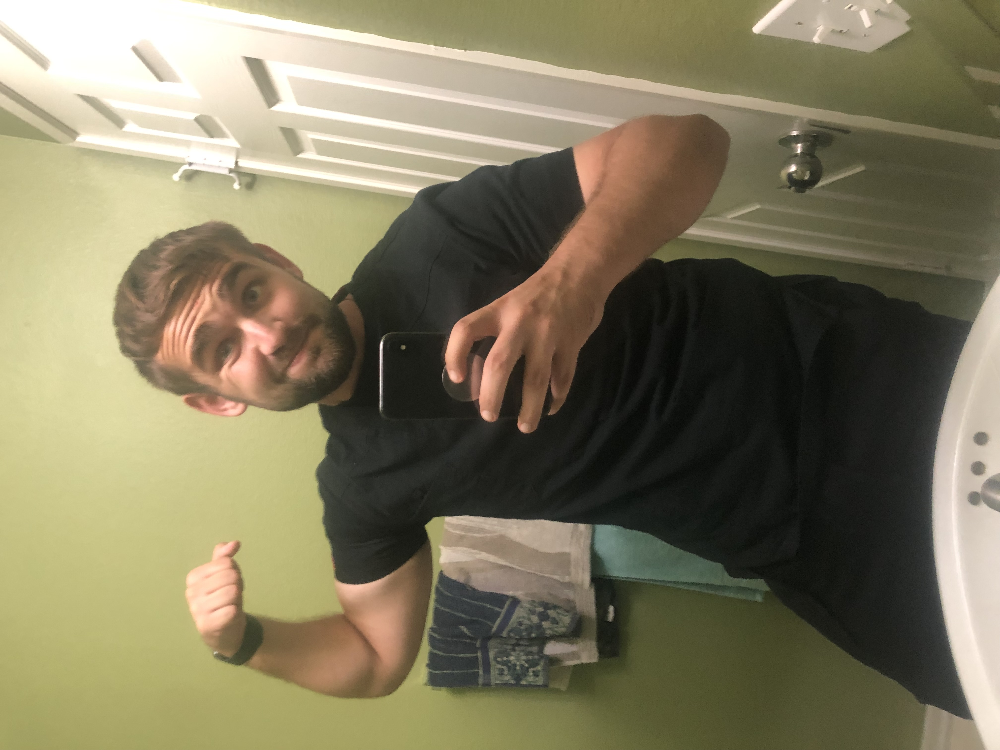
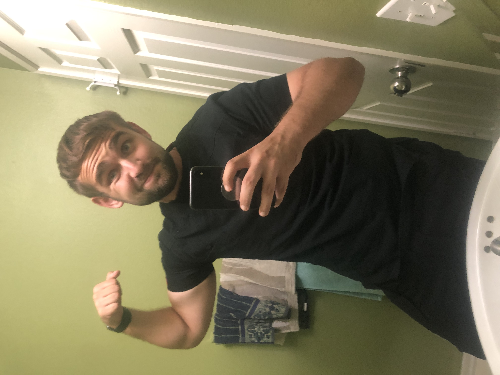

Andrii Dovhaniuk
I am a Data Science student who had an experience with many multinational technology companies such as Google LLC, Apple Inc., and Microsoft Corp. I started my journey in programming when I was 18 years old, and I discovered that this field contains an incredible amount of interesting work. Interesting fact about me is that my passion to programming relay on my big curiosity. As a child, I was inquisitive, and everything for me seemed to be beyond belief. I remember a day when I was watching TV, and I thought, "How does it all work? How does the TV work? How does the computer work? How could we humans come up with Wi-Fi which we cannot see?" I couldn't find the answer to any of those questions, and I didn't have anyone to ask. I grew up in Ukraine, where the computer industry stays on a low level. When I became a teenager, and it was time for me to choose my major, I begin to wonder if I could be one of the people on TV who were so confident in computers. However, I couldn't find any place due to a lack of information. One day, my life gave me a gift, and I moved to my parents, who have lived in the U.S., and everything changed. They gave me an opportunity to go to college, but I wasn't sure that I could be on the same level as students born in the most progressive country. Hence, I didn't choose to major in computer science. I wasn't sure what else I want, and I temporarily chose chemistry. After changing four majors, I decided that I will do everything to graduate in computer science. It's my dream, and I finally have an opportunity to achieve it, and I'm going to seize this opportunity. I have prepared myself to work hard, and I deliberated on my career path. I want to work in the cybersecurity industry; an FBI agent have become my dream work. I am an ambitious student pursuing Data Science degree eager to contribute developed knowledge in cybersecurity. Ready to stand between businesses and threat actors. Lifelong student of developments in threat detection and mitigation. Adept at assisting with every stage of cybersecurity management, from preventive measures to disaster mitigation and recovery. Adaptable and driven with strong work ethic and ability to thrive in team-based or individually motivated settings. Hardworking and reliable with strong ability in fast learning and big desire to learn. Highly organized, proactive and punctual with team-oriented mentality. Information Security Specialist internship experience with passion for aligning security architecture plans and processes with security standards and business goals. Extensive experience developing and testing security framework for cloud-based software. Versed in robust network defense strategies. Trusted Cyber Security Engineer who is ready to spend years protecting companies against both internal and external threats. Talented at preemptively detecting unidentified threat vectors and applying preventive measures to mitigate security flaws. Employs technological solutions and personnel training to harden both people and machines against malicious actors. I obtained such skills as reporting and documentation, organizational skills, friendly and positive attitude, problem resolution, time management, working collaboratively, teambuilding, accountability, data Structure, algorithm Coding, and full in Java, C, and C++.
Experience
Dental Assistant
• Gathered and reviewed patient records
• Data and health history to share with dentists
• Laid out dental instruments and equipment before procedures
Construction Helper
• Clean and prepare construction sites by removing debris and possible hazards
• Loading and unloading of materials, tools, and equipment
Granite Installer helper
• Assembling and breaking down barricades, temporary structures, and scaffolding
• Mixing, pouring, and leveling concrete
• Assisting with transport and operation of heavy machinery and equipment
• Assisting contractors, e.g. electricians and painters, as required
Education
UC Riverside
University of California Riverside
Southwestern College
Portfolio


